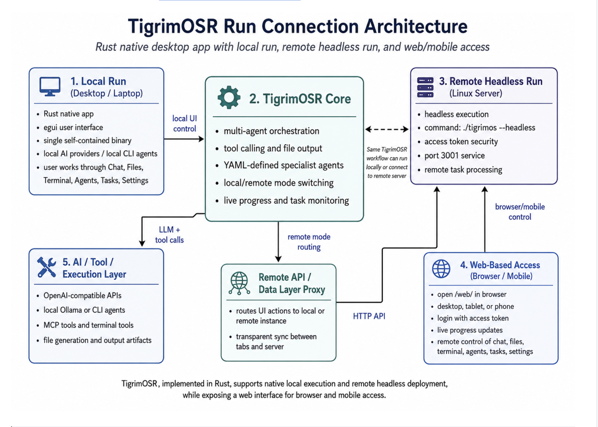
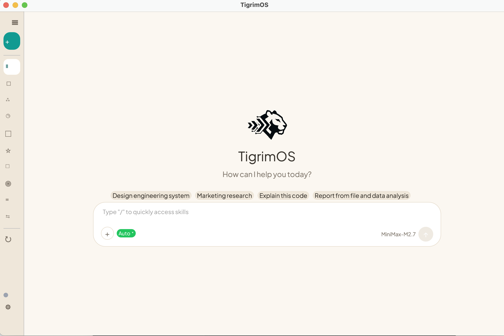
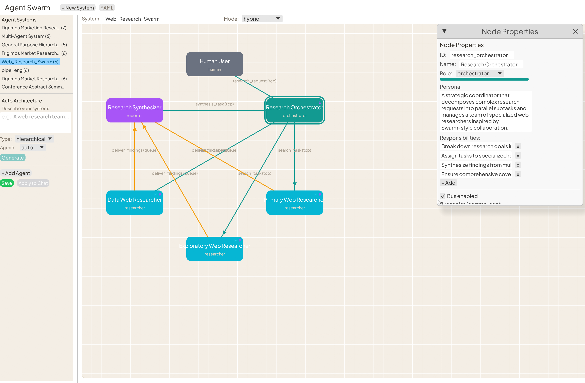
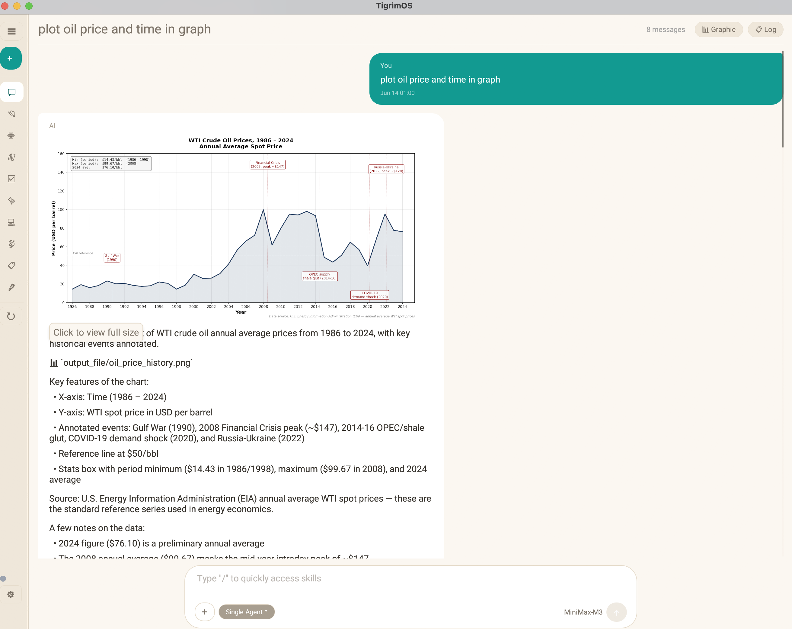
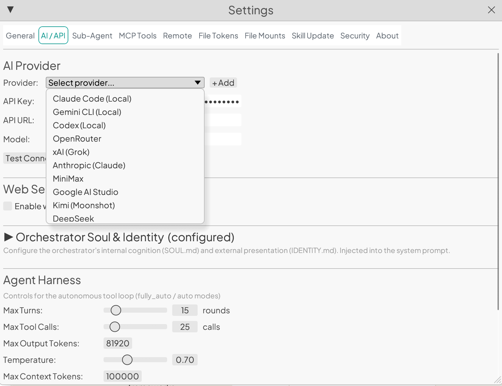
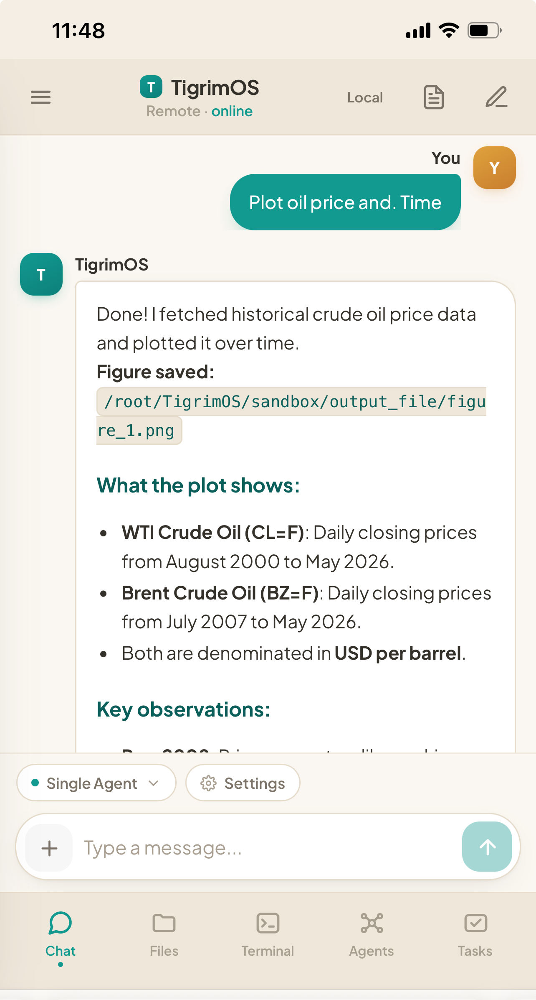
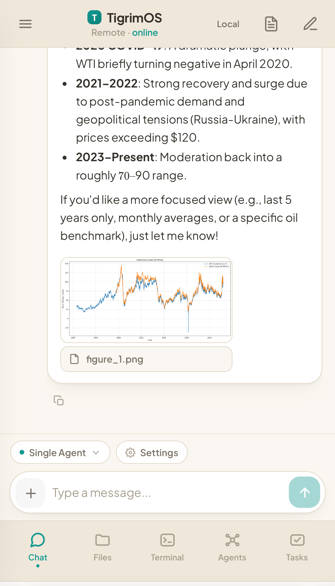

Orchestrate swarms of specialist agents, and build your own agent loop — which tools, models, skills and MCP servers each agent uses — in simple YAML. One self-contained binary. No Node. No Python runtime.
Wire specialist agents into hierarchies, meshes, pipelines or peer-to-peer teams over real inter-agent protocols — TCP, Bus, Queue and Blackboard. Pick a topology and watch messages flow.
Profiles control everything about how an agent thinks and acts — no forks, no plugins-of-plugins. Per-tool approval overrides, parameter pinning, timeout caps and result-size limits included.
# One YAML file = one agent loop
name: researcher
model: claude-fable-5
system_prompt: "Cite every claim."
tools:
allow: [web_search, python, file_io]
web_search:
timeout: 30
max_result_kb: 64
mcp_servers: [github, playwright]
loop:
max_rounds: 12
temperature: 0.3
reflection: true
judge:
enabled: true # independent verifier
tools: [web_search]A native Rust agent/tool runtime with TCP, Bus, Queue and Blackboard inter-agent protocols — surfaced through a native desktop UI, an embedded web interface, mobile remote, and Telegram / LINE bots.

Add your own agent tools by dropping a YAML file in data/tools/ — call HTTP/REST APIs or run templated shell commands, no Rust, no rebuild. Manage everything from the new Settings → Tools UI, with per-tool profiles, timeouts and approvals. Ships with built-in academic paper search over 250M+ works via OpenAlex.
Hierarchical, mesh, hybrid, pipeline, P2P and orchestrator modes. A router triages requests to heterogeneous LLM teams over a shared blackboard.
An independent verifier validates each job — with its own tools — before results ever reach you.
Claude Desktop, Claude Code and npm-compatible MCP servers, over stdio or HTTP. Plus built-ins: web search, Python, file I/O, shell, skills.
Drive Chrome via Playwright MCP — or use Obscura, a stealthy single-binary Rust headless browser with TLS impersonation and zero Node.js.
Zip bundles of skills, agents, MCP servers and connectors. Auto-detects TigrimOS, Claude Desktop, Claude Code and npm formats.
Embedded mobile-responsive web UI, Telegram & LINE bots with approval buttons, Tailscale VPN, and optional Cloudflare tunnels.
Key-free CLI agents — Claude Code, Gemini CLI, OpenAI Codex — plus Anthropic, DeepSeek, Kimi, Gemini, Ollama and any OpenAI-compatible API.
Local-only binding with access tokens, sandboxed code execution, non-root containers, and API-key masking across every surface.
Pure Rust + egui. App, embedded server and a live embedded browser idle at ~270 MB RAM — no interpreted runtimes anywhere.
Native Rust eliminates interpreted runtimes, and a single-process browser avoids multi-process Chromium overhead. The whole platform idles lighter than most Electron apps' splash screens.
Idle RAM, app + server + live browser, as reported in the README.
Click any screenshot to enlarge.






Prebuilt desktop apps — no build tools, no runtimes. Just download and open.
Not notarized yet — first launch: right-click TigrimOS.app → Open → Open.
If SmartScreen appears: More info → Run anyway (installer is unsigned).
curl --proto '=https' --tlsv1.2 -sSf https://sh.rustup.rs | sh
source $HOME/.cargo/env
curl -sSL https://raw.githubusercontent.com/Sompote/TigrimOSR/main/install-linux.sh | bashPrefer containers? Docker setup also works on any distro.
All releases on GitHub Releases · Optional: Python 3.8+ for tool execution · Node.js 18+ only for Playwright browser control (Obscura needs neither) · Server binds to 127.0.0.1:3001 with an access token by default.
Open source under Apache-2.0. Star the repo, file issues, or ship a plugin.